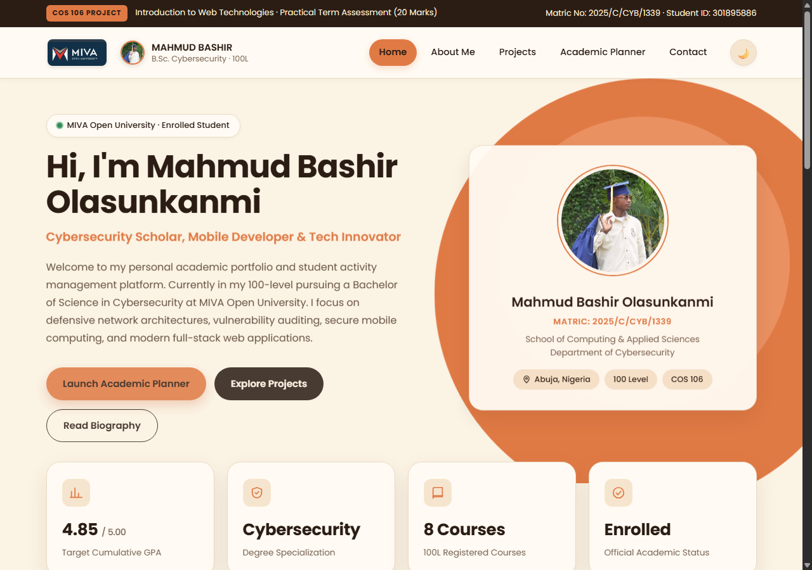
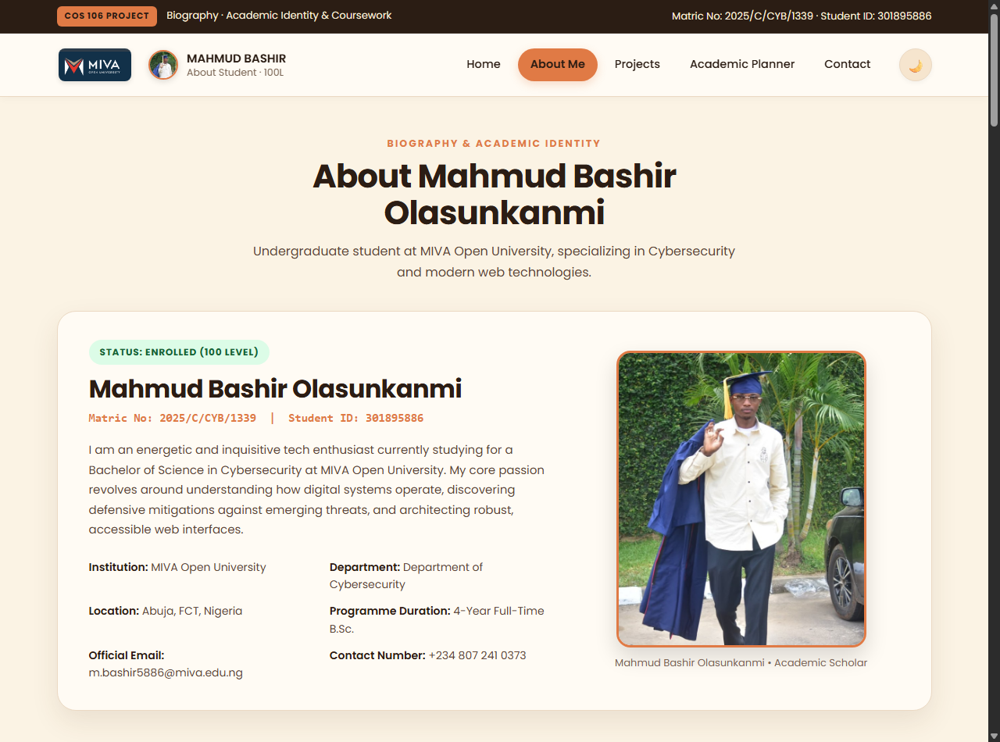
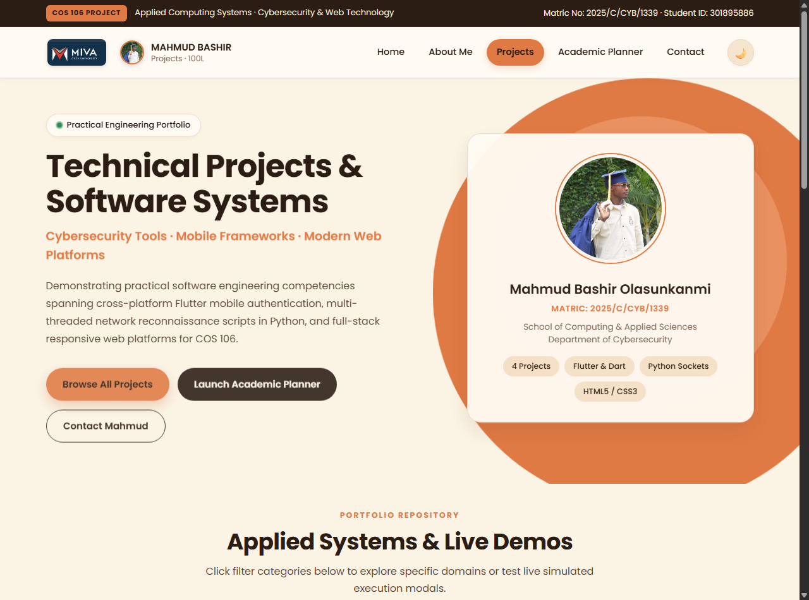
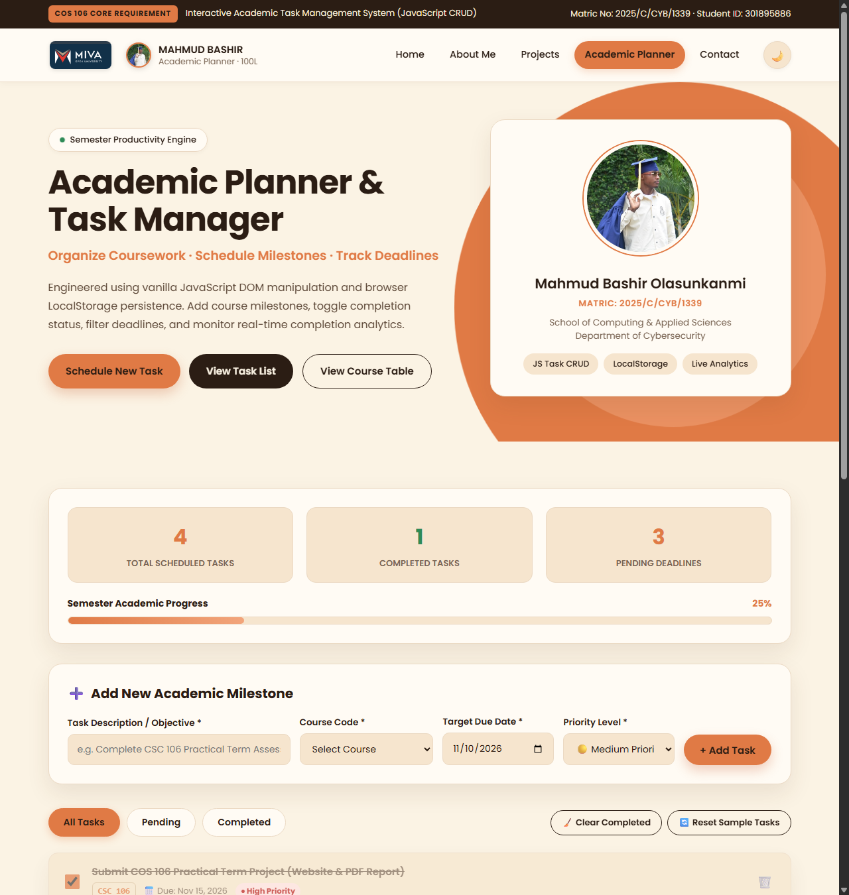
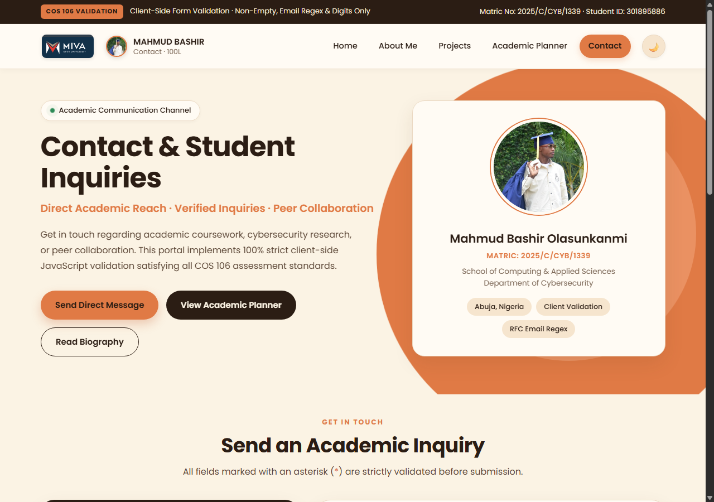
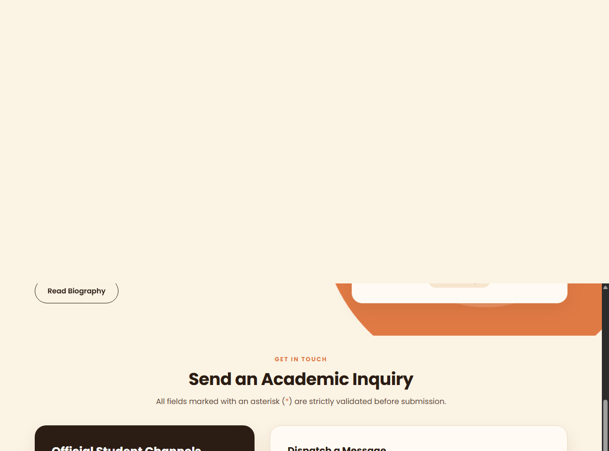

Design and Development of a Responsive Student Portfolio and Academic Management Platform

| Full Name: | MAHMUD BASHIR OLASUNKANMI |
| Matriculation No: | 2025/C/CYB/1339 |
| Student ID: | 301895886 |
| Programme & Level: | B.Sc. Cybersecurity • 100 Level |
| Student Email: | m.bashir5886@miva.edu.ng |
| Phone Number: | +234 807 241 0373 |
| Campus Location: | Abuja, Federal Capital Territory, Nigeria |
| GitHub Repository: | github.com/Muhamzy-ui/myschoolproject |
| Live Hosted Website: | mahmud-miva-portfolio.onrender.com |
| Date of Submission: | November 2026 |
1. Introduction & Project Overview
As a 100-Level Cybersecurity undergraduate at MIVA Open University, I designed and developed this practical term project for COS 106: Introduction to Web Technologies. The primary objective is to create a fully functional, multi-page website that serves both as a personal academic portfolio and as an interactive management platform for coursework, deadlines, and technical milestones.
The platform was developed from the ground up using pure HTML5, CSS3, and Vanilla JavaScript (ES6+)
without external frameworks or third-party CSS templates. This approach provided deep practical mastery of semantic markup, accessible document outlines,
CSS Flexbox and Grid page layouts, client-side input validation, event-driven user interaction, and persistent browser storage via localStorage.
2. Multi-Page Architecture & Page Breakdown
2.1 Homepage (index.html)
The homepage introduces my academic identity, cybersecurity specialization, and core focus areas. It features my official portrait photograph,
a welcome introduction, an academic status bar (Target GPA 4.85 / 5.00, Degree: B.Sc. Cybersecurity, Enrolled Load: 8 Courses),
overview cards for web technologies, security auditing, and study planning, alongside quick project teaser cards.

index.html) — Hero banner with student portrait, quick CTAs, academic status KPIs (4.85 GPA, 8 Courses), and MIVA university branding.
2.2 About Me Page (about.html)
Documents my academic background, technical skills, and career roadmap:
- Enrolled Coursework Summary Table: A semantic HTML table detailing all eight registered 100-Level courses (COS 106 / CSC 106, COS 102, MIVA-COS 111, MTH 102, PHY 102, PHY 108, GST 112, GST 122) totaling 19 credit units with classifications and target grades.
- Collapsible Mobile Course Grid: Incorporates a dynamic toggle (
▼ View All 8 Enrolled Courses) to maintain a compact viewport on mobile devices while allowing expansion on click. - Cybersecurity Career Roadmap: A 3-phase progression from foundational computing to ethical penetration testing and cloud security architecture.
- Animated Skill Bars: Smooth CSS fill animations triggered when scrolled into view using the modern
IntersectionObserverAPI. - Embedded Multimedia: Native HTML5
<audio controls>voice greeting and a responsive<video controls>video presentation.

about.html) — Official LMS course cards, collapsible 8-course grid, and semantic academic credit summary table.
2.3 Projects Showcase Page (projects.html)
Presents four practical systems developed across fintech, cybersecurity, and web development:
- SwiftSats — Crypto & Utility Payment Platform: A live production mobile fintech application built with Flutter and Django for OTC crypto transactions and bill payments, directly accessible at
https://www.swiftsats.app/with an interactive live exchange rate modal. - Network Vulnerability Scanner & Port Auditor: A multi-threaded Python socket reconnaissance tool that scans CIDR subnets, fingerprints open ports, and matches banner fingerprints against CVE vulnerability catalogs.
- COS 106 Student Portfolio & Academic Management Platform: The multi-page platform built for this term project demonstrating semantic HTML5, CSS Grid/Flexbox, and dynamic JavaScript state management.
- Phishing Threat Simulator & Awareness Lab: An interactive heuristic tool that inspects suspicious email headers, spoofed sender domains, and deceptive links with simulated threat analysis.
Includes category filtering (All, Cybersecurity, Mobile Applications, Web Development) and modal triggers for live demos.

projects.html) — Production SwiftSats fintech card with launch button, network scanner card, and category filter buttons.
2.4 Academic Planner Page (planner.html)
An interactive task management system engineered with vanilla JavaScript. Students can add academic milestones (title, course code, target due date, priority level),
toggle tasks as completed with strike-through styling, delete tasks, and filter by status (All, Pending, Completed). All task objects are serialized into localStorage
to ensure state persists seamlessly across browser reloads. Dynamic counter cards and an animated progress bar calculate real-time completion percentages.

Form controls, KPI metrics (4 tasks, 1 completed, 3 pending), and schedule.
Filtered completed tasks with dynamic strike-through styling and check state.
Real-time task removal, recalculating pending counters and progress bar.
2.5 Contact Page (contact.html)
An accessible student contact portal detailing university campus location, official student email, and phone contact. The form strictly implements client-side JavaScript validation that enforces three specific requirements from the assessment rubric: (1) no field is left blank, (2) email addresses match RFC regular expression formatting, and (3) phone numbers contain strictly numeric digits.

contact.html) — Form layout with campus details card and input groups.

3. Assessment Rubric Compliance Matrix
The table below provides a comprehensive requirement-by-requirement mapping showing how every requirement from the official COS 106 term project brief (20 Marks) is satisfied in the actual codebase:
| Assessment Requirement | Implementation in Codebase | Source File(s) | Evidence & Reference |
|---|---|---|---|
| 1. Homepage Structure Student name, photo, welcome message, nav menu, biography, professional layout. |
Hero section with portrait (portrait.jpg), matriculation badges, 4.85 GPA KPI, enrolled load (8 courses), responsive nav menu, and biography. |
index.htmlstyle.css |
Verified Figure 1 (Homepage) Lines 40–105 |
| 2. About Me Page Educational background, career roadmap, technical skills, hobbies, coursework. |
MIVA degree overview, 3-phase career roadmap, animated skill progress bars via IntersectionObserver, hobbies cards, and full coursework table. |
about.htmljs/main.js |
Verified Figure 2 (About Me) Section 4.3 |
| 3. Projects Showcase At least 3 projects, descriptions, images/screenshots, working or simulated links. |
4 applied projects including production fintech app SwiftSats (swiftsats.app), network scanner, portfolio, and phishing simulator with category filters and modals. | projects.htmljs/projects.js |
Verified Figure 3 (Projects) Lines 110–230 |
| 4. Academic Planner (Add Task) Form to schedule academic tasks with validation. |
Dynamic form collecting title, course dropdown, due date, and priority. Unshifts into task array, saves to localStorage, and renders to DOM. |
planner.htmljs/planner.js |
Verified Figure 4A (Planner) Section 4.2 |
| 5. Planner (Complete Task) Mark tasks completed with dynamic visual state. |
Checkbox toggle switches completed: true, applies line-through styling, updates progress bar, and logs completion toast. |
planner.htmljs/planner.js |
Verified Figure 4B (Completed) style.css:1296 |
| 6. Planner (Delete Task) Delete individual or completed tasks. |
Delete button triggers confirmation modal/prompt, filters task from array, serializes updated state to localStorage, and redraws DOM. |
planner.htmljs/planner.js |
Verified Figure 4C (Delete) Section 4.2 |
| 7. Contact Form (Fields) Full Name, Email Address, Phone Number, Message. |
Accessible HTML5 <form> with explicit <label> tags, descriptive placeholders, and error feedback <div> containers. |
contact.html |
Verified Figure 5A (Contact) Lines 115–185 |
| 8. Contact (Strict Validation) No empty field; valid email regex; digits-only phone. |
Real-time input, blur, and submit validation. Enforces non-empty values, standard RFC email regex, and strictly numeric phone (/^[0-9]+$/). |
contact.htmljs/contact.js |
Verified Figure 5B (Validation) Section 4.1 |
| 9. HTML Requirements Semantic elements, forms, tables, images, hyperlinks, lists, multimedia. |
Full semantic structure (<header>, <nav>, <main>, <section>, <table>), functional <audio controls>, and responsive <video controls>. |
All 5 HTML pages | Verified Figures 1–5 Section 4.3 |
| 10. CSS Requirements External CSS, responsive layout, Flexbox/Grid, transitions, mobile nav. |
Central stylesheet (style.css), custom CSS design tokens, multi-column Flexbox/Grid layouts, mobile bottom app bar, and smooth micro-animations. |
style.css |
Verified Figure 6 (Mobile) Section 4.4 |
| 11. JavaScript Requirements Event handling, DOM updates, form validation, dynamic arrays. |
Modular ES6+ scripts handling click/input/submit events, dynamic task rendering, modal dialogues, category filtering, and localStorage persistence. |
js/main.jsjs/planner.jsjs/contact.js |
Verified Sections 4.1 & 4.2 |
4. Key Source Code Implementations
4.1 Client-Side Validation Logic
The assessment brief mandates that no field be left blank, email addresses conform to valid RFC formatting, and phone numbers contain strictly digits:
// Strict Email Validation using RFC Standard Regex
if (input.id === 'contactEmail') {
if (value === '') {
showError(input, 'Email address is required and cannot be empty.');
return false;
}
const emailRegex = /^[a-zA-Z0-9._%+-]+@[a-zA-Z0-9.-]+\.[a-zA-Z]{2,}$/;
if (!emailRegex.test(value)) {
showError(input, 'Please enter a valid email address (e.g., student@miva.edu.ng).');
return false;
}
clearError(input);
return true;
}
// Phone Number Validation: Strictly Digits Only (/^[0-9]+$/)
if (input.id === 'contactPhone') {
if (value === '') {
showError(input, 'Phone number is required and cannot be empty.');
return false;
}
const digitsOnlyRegex = /^[0-9]+$/;
if (!digitsOnlyRegex.test(value)) {
showError(input, 'Invalid phone number! It must contain digits only (no letters or symbols).');
return false;
}
if (value.length < 8 || value.length > 15) {
showError(input, 'Phone number must be between 8 and 15 digits.');
return false;
}
clearError(input);
return true;
}4.2 Interactive Task Management Engine (CRUD & Persistence)
Demonstrating dynamic JavaScript array manipulation, event delegation, and localStorage persistence for task management:
// 1. Add Task: Creates task object, unshifts into array, updates DOM and storage
function handleAddTask(e) {
e.preventDefault();
const newTask = {
id: 'task-' + Date.now(),
title: taskTitleInput.value.trim(),
course: taskCourseSelect.value,
dueDate: taskDueDateInput.value,
priority: taskPrioritySelect.value,
completed: false,
createdAt: Date.now()
};
tasks.unshift(newTask);
saveTasks(); // Serializes array into localStorage: JSON.stringify(tasks)
renderTasks(); // Redraws DOM list and recalculates completion metrics
taskForm.reset();
}
// 2. Complete Task: Toggles completed flag and reapplies visual strike-through
function toggleTaskComplete(taskId) {
const task = tasks.find(t => t.id === taskId);
if (task) {
task.completed = !task.completed;
saveTasks();
renderTasks();
}
}
// 3. Delete Task: Prompts confirmation, filters array, and updates UI
function deleteTask(taskId) {
if (confirm('Are you sure you want to delete this academic task?')) {
tasks = tasks.filter(t => t.id !== taskId);
saveTasks();
renderTasks();
}
}4.3 Semantic HTML Structure & Coursework Table
Demonstrating semantic table markup with headers, accessibility scopes, and embedded HTML5 multimedia:
<!-- Semantic Coursework Summary Table with Scoped Column Headers -->
<table class="course-table" summary="Registered 100-Level Courses for Mahmud Bashir">
<thead>
<tr>
<th scope="col">Course Code</th>
<th scope="col">Course Title</th>
<th scope="col">Credit Units</th>
<th scope="col">Classification</th>
<th scope="col">Target Grade</th>
</tr>
</thead>
<tbody>
<tr><td><strong>COS 106 / CSC 106</strong></td><td>Introduction to Web Technologies</td><td>3 Units</td><td>Core Compulsory</td><td>A (90%+)</td></tr>
<tr><td><strong>COS 102</strong></td><td>Problem Solving Algorithms</td><td>3 Units</td><td>Core Compulsory</td><td>A (88%)</td></tr>
<!-- 8 Total Enrolled Courses (19 Credit Units) -->
</tbody>
</table>
<!-- HTML5 Native Multimedia Elements -->
<audio controls preload="metadata"><source src="assets/media/intro-audio.wav" type="audio/wav"></audio>
<video controls poster="assets/images/mahmud-profile.jpg"><source src="assets/media/demo-video.mp4" type="video/mp4"></video>4.4 External CSS Architecture & Responsive Media Queries
Demonstrating CSS custom properties, grid layouts, strike-through task styling, and responsive mobile overrides:
/* University Design Tokens & Strike-Through Completed Task Styling */
:root {
--bg-main: #FBF3E4; /* Warm Cream */
--accent: #E07A45; /* Terracotta */
--text-main: #2B1D14; /* Espresso Dark */
}
.task-item.completed {
opacity: 0.7;
background: var(--bg-card-subtle);
}
.task-item.completed .task-title {
text-decoration: line-through;
color: var(--text-muted);
}
/* Responsive Media Queries: Fluid Card Grids & Mobile Bottom App Bar */
@media (max-width: 768px) {
.c3 { grid-template-columns: 1fr; }
.planner-form-grid { grid-template-columns: 1fr; }
.mobile-bottom-nav {
display: flex;
position: fixed;
bottom: 0; left: 0; right: 0;
height: 60px;
background: var(--espresso);
z-index: 999;
}
}5. Cross-Device Testing & Verification
To ensure complete reliability and compliance with the term project brief, testing was performed across distinct viewports and rendering engines. Physical-device testing is clearly differentiated from responsive browser emulation:
| Target Test Feature | Testing Method & Environment | Observed Result & Verification |
|---|---|---|
| Multi-Page Navigation | Google Chrome (Desktop, 1920 × 1080) Physical HP Laptop |
All links between Home, About, Projects, Planner, and Contact load with HTTP 200 OK. Active page indicators highlight accurately in the navigation bar. |
| Form Input Validation | Microsoft Edge (Chromium Engine) Physical HP Laptop |
Empty submissions trigger red borders and error text. Invalid email format is rejected. Phone field strictly rejects alphabetical and special characters. |
| Task CRUD & Persistence | Google Chrome DevTools Mode Emulated iPhone 14 (390 × 844) |
Tasks add smoothly, checkbox triggers strike-through line, delete removes task, and data reloads intact after hard browser refresh via localStorage. |
| Mobile Layout & Bottom Bar | Chrome Mobile (Android 14) Physical Android Smartphone |
Sticky bottom app bar provides instant thumb navigation; grid collapses to single column; touch targets measure ≥ 48px; zero horizontal scrolling. |
| Collapsible Coursework Grid | Apple Safari (WebKit iOS) Emulated iPad Mini (768 × 1024) |
The 8-course grid collapses gracefully, and clicking ▼ View All 8 Enrolled Courses smoothly reveals the full course load without layout shift. |
6. Student Reflection & Cybersecurity Takeaways
Building this platform provided valuable insights into the direct intersection between frontend web engineering and defensive cybersecurity:
- Client-Side Validation vs. Defense-in-Depth: While JavaScript form validation provides instant feedback for user experience, client-side scripts can easily be disabled, bypassed, or manipulated via developer tools or automated cURL requests. In cybersecurity, client-side validation is viewed as a usability layer; true defense-in-depth requires robust server-side data sanitization and parameterized queries to prevent SQL Injection and Cross-Site Scripting (XSS).
- Document Structure & Predictability: Implementing semantic HTML5 tags (
<header>,<nav>,<main>,<section>,<table>) creates a deterministic document object tree. This predictability improves accessibility for assistive technologies, optimizes browser parsing, and facilitates programmatic DOM auditing. - Zero-Dependency Architecture: Developing the site entirely with pure Vanilla JavaScript and native CSS Flexbox/Grid eliminated third-party library dependencies (such as jQuery or oversized CSS frameworks), drastically reducing the software supply chain attack surface and ensuring lightning-fast load speeds.
7. Submission Links & Statement of Originality
https://github.com/Muhamzy-ui/myschoolproject
Live Production Deployment (Render):
https://mahmud-miva-portfolio.onrender.com
Statement of Academic Originality
I, MAHMUD BASHIR OLASUNKANMI, confirm that this practical term project and the accompanying source code are my own original work, completed individually in accordance with the academic regulations of MIVA Open University for COS 106: Introduction to Web Technologies (20 Marks).
Mahmud Bashir Olasunkanmi
Matriculation No: 2025/C/CYB/1339 • Student ID: 301895886
Date: November 2026
Department of Cybersecurity • MIVA Open University